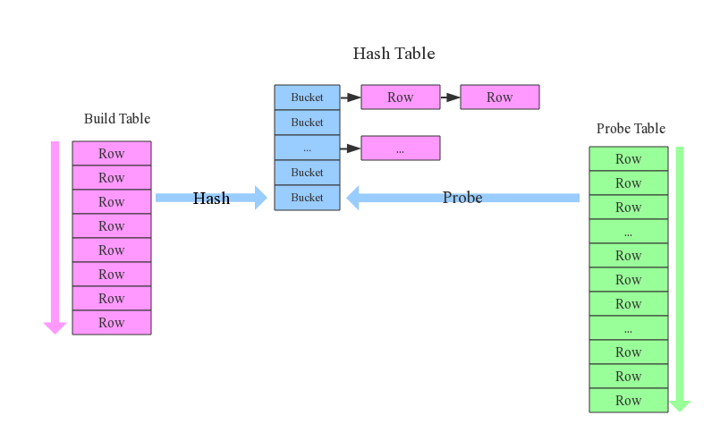
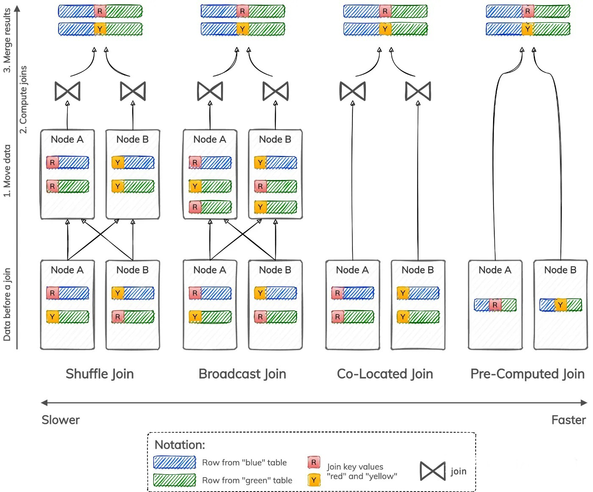
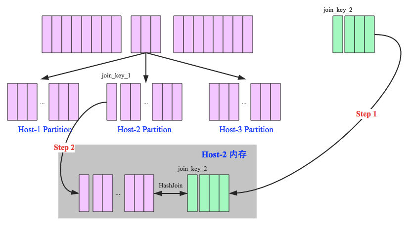
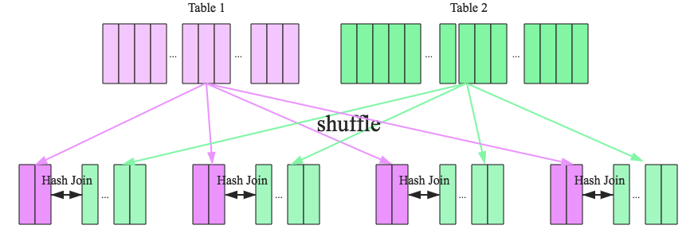
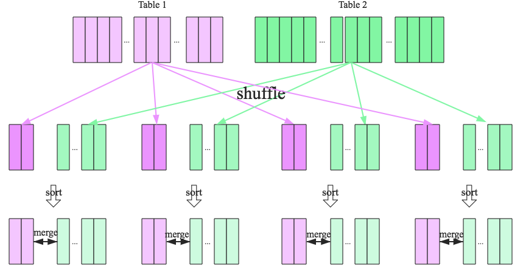

前言
Join操作可以说是最复杂、代价最大的操作，也是OLAP场景中使用相对较多的操作，尤其是在大数据领域中，Join操作的性能优劣直接会影响到整个查询，接下来我们就高屋建瓴的对整个JOIN操作进行解析，方便大家更深入的理解JOIN原理。
单机Join算法
一般的Join算法：Nested-Loop Join (NL Join)、Block Nested-Loop Join、Sort Merge Join、Hash Join。
接下来依次进行解析。
Nested-Loop Join (NL Join)
1 | # Nested-Loop Join |
可以看出，NL join实际上就是简单的循环 来进行关联，时间复杂度是O(m*n)。假如参与Join的两张表一张量级为1万，一张量级为10w，那么进行比较的次数为1w*10w=10亿次。这在大表场景下几乎不可用，所以这种可以算是join算法发展过程中最原始的算法，实际上很少用到。
Index Nested-Loop Join
1 | # Index Nested-Loop Join |
假设其中一个表存在索引，那么对外层表进行循环，对内表就可以利用索引进行点查,复杂度瞬间降了下来。
Block Nested-Loop Join
如果没有索引，那就只能对 普通的NL Join 进行优化，主要是两个方面：
- 小表驱动大表，即数据量较大的集作为于for循环的内部循环。目的是结合2，减少内表的扫描。
- 一次处理一个数据块，而不是一条记录。也就是所谓的Block Nested Loop Join，通过对外表进行分块降低IO次数，提升缓存命中率。
将外层循环的行/结果集存入join buffer, 内层循环的每一行与整个buffer中的记录做比较，从而减少内层循环的次数. 举例来说，外层循环的结果集是100行，使用NLJ 算法需要扫描内部表100次，如果使用BNL算法，先把对Outer Loop表(外部表)每次读取的10行记录放到join buffer,然后在InnerLoop表(内部表)扫瞄一次中直接匹配这10行数据，内存循环就可以一次与这10行进行比较, 这样只需要比较10次，对内部表的扫描减少了9/10。所以BNL算法就能够显著减少内层循环表扫描的次数. 前面描述的query, 如果使用join buffer。其实 这点很容易想到，对磁盘读取，当然是尽可能一次读取较多的内容，减少IO。
Sort Merge Join
对NL join，如果集合中的元素是有序的，比较的次数会大幅度降低，避免很多无意义的比较运算。
通过将JOIN操作拆分成Sort和Merge两个阶段实现Join操作的加速。对于Sort阶段，是可以提前准备好可以复用的。这样的思想对于MySQL这类关系型数据库是非常友好的，这也能解释阿里巴巴开发手册中要求关联的字段必须建立索引，因为索引保证了数据有序。该算法时间复杂度为排序开销O(mlog(m)+nlog(n))+合并开销O(m+n)。但是通常由于索引保证了数据有序，索引其时间复杂度为O(m+n)。
Hash Join
Hash Join在大数据中非常常用的算法，其是思路也很简单，无非是利用hash，选取其中一个表 A对join key做hash，建立hash表，对另一个表进行扫描，扫描时就可以对join key利用hash 直接定位到表A 相应的记录。下面借他人文章举一个例子，文章的引用末尾会给出。
先来看看这样一条SQL语句：select * from order,item where item.id = order.i_id，很简单一个Join节点，参与join的两张表是item和order，join key分别是item.id以及order.i_id。现在假设这个Join采用的是hash join算法，整个过程会经历三步：
- 确定Build Table以及Probe Table：这个概念比较重要，Build Table使用join key构建Hash Table，而Probe Table使用join key进行探测，探测成功就可以join在一起。通常情况下，小表会作为Build Table，大表作为Probe Table。此事例中item为Build Table，order为Probe Table。
- 构建Hash Table：依次读取Build Table（item）的数据，对于每一行数据根据join key（item.id）进行hash，hash到对应的Bucket，生成hash table中的一条记录。数据缓存在内存中，如果内存放不下需要dump到外存。
- 探测：再依次扫描Probe Table（order）的数据，使用相同的hash函数映射Hash Table中的记录，映射成功之后再检查join条件（item.id = order.i_id），如果匹配成功就可以将两者join在一起。
基本流程可以参考上图，这里有两个小问题需要关注：
hash join性能如何？
很显然，hash join基本都只扫描两表一次，可以认为o(a+b)，较之最极端的笛卡尔集运算a*b，不知甩了多少条街。
为什么Build Table选择小表？
道理很简单，因为构建的Hash Table最好能全部加载在内存，效率最高；这也决定了hash join算法只适合至少一个小表的join场景，对于两个大表的join场景并不适用。
分布式Join算法
所谓的分布式，无非是为了充分利用并行计算的资源，利用的算法还是单机join的算法，所以分布式join算法 无非是 分布方式 + Join 算法 ，根据分布方式有三种：boradcast、shuffle、located ，利用这几种数据分布方式再选择上合适的Join算法，就构成了分布式JOIN，常见的分布式JOIN有如下几种:
- A shuffle join re-distributes rows from both tables among nodes based on join key values, such that all rows with the same join key value are moved to the same node. Depending on a particular algorithm used to compute joins, a shuffle join can be a shuffle hash join, shuffle sort-merge join, and so forth.
- A broadcast join moves data stored in only one table, such that all rows from the smallest table are available on every node. Depending on a particular algorithm used to compute joins, a broadcast join can be a broadcast hash join, broadcast nested-loop join, and so forth.
- A co-located join does not need to move data at all because data is already stored such that all rows with the same join key value reside on the same node. Data still needs to be joined using a nested-loop, sort-merge, or hash join algorithm.
- A pre-computed join does not need to move data or compute joins locally on each node because data is already stored in a joined form. This type of join skips data movement and join computation and goes directly to merging and returning results.

Spark Join 算法
### broadcast hash join
将其中一张小表广播分发到另一张大表所在的分区节点上，分别并发地与其上的分区记录进行hash join。broadcast适用于小表很小，可以直接广播的场景。
broadcast阶段：
将小表广播分发到大表所在的所有主机。广播算法可以有很多，最简单的是先发给driver，driver再统一分发给所有executor；要不就是基于BitTorrent的TorrentBroadcast。
hash join阶段：
在每个executor上执行单机版hash join，小表映射，大表试探。

SparkSQL规定broadcast hash join执行的基本条件为被广播小表必须小于参数spark.sql.autoBroadcastJoinThreshold，默认为10M
shuffle hash join
在大数据条件下如果一张表很小，执行join操作最优的选择无疑是broadcast hash join，效率最高。但是一旦小表数据量增大，广播所需内存、带宽等资源必然就会太大，broadcast hash join就不再是最优方案。此时可以按照join key进行分区，根据key相同必然分区相同的原理，就可以将大表join分而治之，划分为很多小表的join，充分利用集群资源并行化。如下图所示，shuffle hash join也可以分为两步：
shuffle阶段:
分别将两个表按照join key进行分区，将相同join key的记录重分布到同一节点，两张表的数据会被重分布到集群中所有节点。这个过程称为shuffle。
hash join阶段:

看到这里，可以初步总结出来如果两张小表join可以直接使用单机版hash join；如果一张大表join一张极小表，可以选择broadcast hash join算法；而如果是一张大表join一张小表，则可以选择shuffle hash join算法；那如果是两张大表进行join呢
sort merge join
SparkSQL对两张大表join采用了全新的算法－sort-merge join，如下图所示，整个过程分为三个步骤：
shuffle阶段：
将两张大表根据join key进行重新分区，两张表数据会分布到整个集群，以便分布式并行处理。
sort阶段：
对单个分区节点的两表数据，分别进行排序。
merge阶段：
对排好序的两张分区表数据执行join操作。join操作很简单，分别遍历两个有序序列，碰到相同join key就merge输出，否则取更小一边。如下图所示：

经过上文的分析，很明显可以得出来这几种Join的代价关系：
cost(broadcast hash join) < cost(shuffle hash join) < cost(sort merge join)，数据仓库设计时最好避免大表与大表的join查询，SparkSQL也可以根据内存资源、带宽资源适量将参数spark.sql.autoBroadcastJoinThreshold调大，让更多join实际执行为broadcast hash join。

...
...
This is copyright.